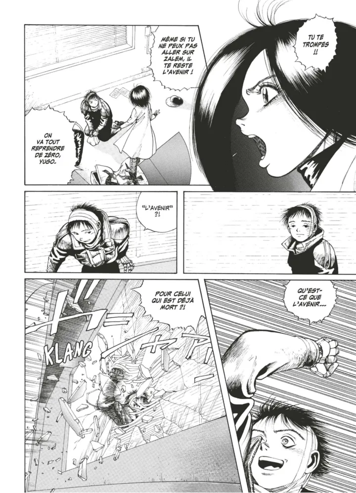
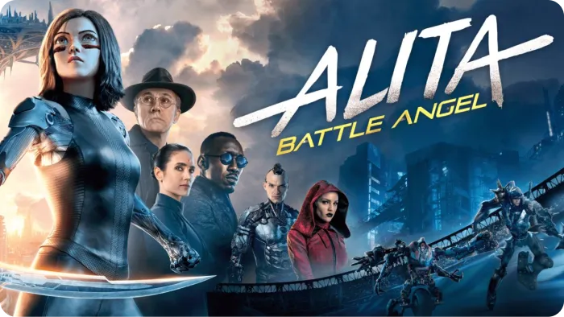

Succédant à la série Akira (1982,1990), Gunnm, publiée de 1990 à 1995 est bien vite devenue une œuvre incontournable du genre cyberpunk.
L'histoire suit l’évolution de sa protagoniste Gally, un cyborg amnésique, dans une quête existentielle et philosophique.
Suite à la collision d’un astéroïde avec la terre, la population humaine est presque entièrement décimée.
Un conflit social naît et les survivants sont séparés selon leur classe sociale : l’élite vit dans Zalem, la ville suspendue, tandis que la terre, dite Kuzutetsu, sert à celle-ci de décharge.
“Nous choisissons tous qui nous voulons être et nous le devenons,
Dans la beauté et la
laideur.”
Gally, Gunnm
Gunnm est une dystopie qui reprend certains éléments de la vie réelle pour créer un ensemble dystopique mêlé à une esthétique fortement cyberpunk.
La problématique de la survie est mêlée au concept de la cybernétique, utilisée pour s’améliorer et mieux subsister dans la ville terrestre. Il existe un marché noir de membres humains que les vendeurs se procurent par l’emploi de la violence et de la criminalité.
Une seule sanction existe, mise en place par Zalem : la mort, délivrée par les Hunter-Warriors, des chasseurs de primes autorisés et récompensés.
Critique sociale et récit d’émancipation, Gunnm est une œuvre ayant participé à la définition du genre cyberpunk et à son essor : la force de son message réside dans un univers sombre mêlant criminalité, injustice, conflits sociaux-politiques et amélioration de soi par l’emploi de la technologie.
Le manga soulève certaines questions quant à la cybernétique et la technologie évolutive : serons-nous un jour amenés à vivre dans un monde similaire à celui de Gally ?
L’influence du manga a été accrue par la sortie de son adaptation en film produit par James Cameron et réalisé par Robert Rodriguez en 2019.
Ainsi, plus de 20 ans après la fin de la série Gunnm, sa portée et son message ont été renouvelés, ce qui témoigne de l’importance de cette œuvre dans la culture geek et cyberpunk, la rendant toujours actuelle.